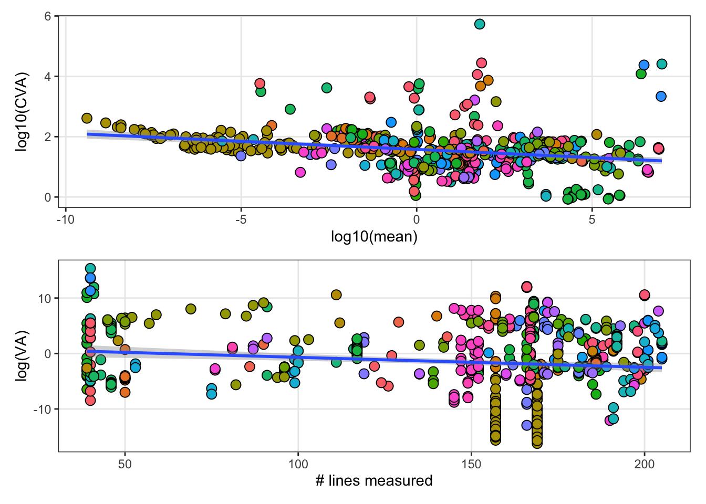
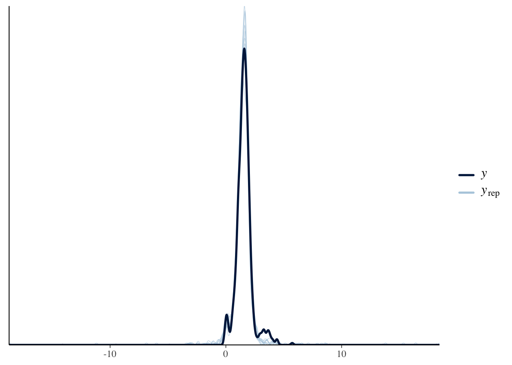
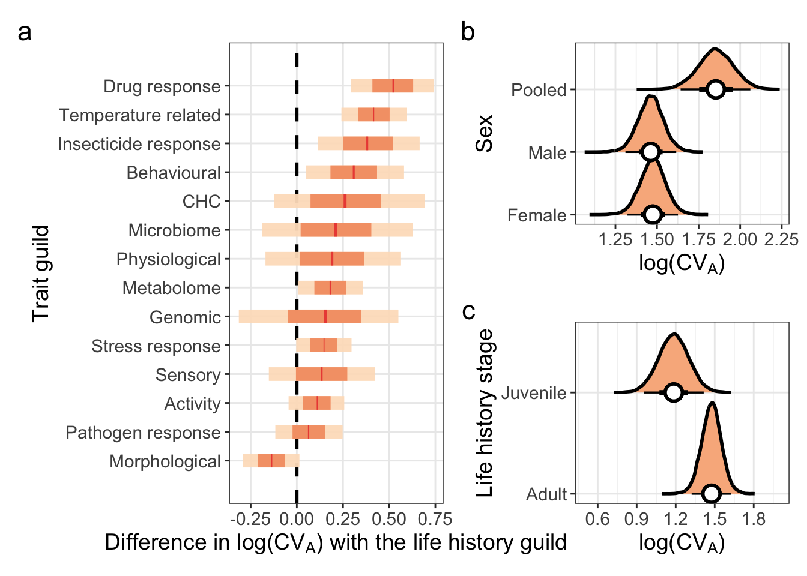

Last updated: 2023-01-10
Checks: 7 0
Knit directory: DGRP/
This reproducible R Markdown analysis was created with workflowr (version 1.7.0). The Checks tab describes the reproducibility checks that were applied when the results were created. The Past versions tab lists the development history.
Great! Since the R Markdown file has been committed to the Git repository, you know the exact version of the code that produced these results.
Great job! The global environment was empty. Objects defined in the global environment can affect the analysis in your R Markdown file in unknown ways. For reproduciblity it’s best to always run the code in an empty environment.
The command set.seed(20220705) was run prior to running
the code in the R Markdown file. Setting a seed ensures that any results
that rely on randomness, e.g. subsampling or permutations, are
reproducible.
Great job! Recording the operating system, R version, and package versions is critical for reproducibility.
Nice! There were no cached chunks for this analysis, so you can be confident that you successfully produced the results during this run.
Great job! Using relative paths to the files within your workflowr project makes it easier to run your code on other machines.
Great! You are using Git for version control. Tracking code development and connecting the code version to the results is critical for reproducibility.
The results in this page were generated with repository version 6b276ad. See the Past versions tab to see a history of the changes made to the R Markdown and HTML files.
Note that you need to be careful to ensure that all relevant files for
the analysis have been committed to Git prior to generating the results
(you can use wflow_publish or
wflow_git_commit). workflowr only checks the R Markdown
file, but you know if there are other scripts or data files that it
depends on. Below is the status of the Git repository when the results
were generated:
Ignored files:
Ignored: .DS_Store
Ignored: .Rhistory
Ignored: .Rproj.user/
Ignored: code/.DS_Store
Ignored: data/.DS_Store
Ignored: data/derived/.DS_Store
Ignored: data/input/.DS_Store
Ignored: data/input/Raw_data_files/.DS_Store
Ignored: data/input/Raw_data_files/Zwoinska_2020/.DS_Store
Ignored: fits/
Untracked files:
Untracked: -6300D-135452-M.Rhistory
Untracked: Guild_variance_estimates.pdf
Untracked: Life_stage_screen.csv
Untracked: Trait_variance_analysis.html
Untracked: analysis/Google_sheets_private.Rmd
Untracked: analysis/cross_phenotype_meta_analysis.Rmd
Untracked: broad_sense_heritability.csv
Untracked: code/LICENSE
Untracked: code/gcta64
Untracked: code/prettify
Untracked: code/run_mashr.R
Untracked: code/toy.map
Untracked: code/toy.ped
Untracked: data/DGRP_gwas_bfiles/
Untracked: data/Literature_table.csv
Untracked: data/Reported_heritability.xlsx
Untracked: data/derived/CVA_data.csv
Untracked: data/derived/all.dgrp.phenos_scaled.csv
Untracked: data/derived/all.dgrp.phenos_unscaled.csv
Untracked: data/derived/cmpa_snp_ld_matrix.rds
Untracked: data/derived/correlation_SEs.rds
Untracked: data/derived/rg_female.csv
Untracked: data/derived/rg_male.csv
Untracked: data/gwas_data/
Untracked: gwas_data/
Untracked: meta_model_fits/
Unstaged changes:
Modified: .gitignore
Modified: analysis/Trait_correlations.Rmd
Modified: analysis/run_GWAS.Rmd
Modified: data/derived/SNP_heritability_cleaned.csv
Modified: data/derived/dgrp_phenos_calculated_from_raw_data.csv
Modified: data/derived/dgrp_phenos_calculated_from_raw_data_meta_data.csv
Modified: data/derived/meta_data_for_all_traits.csv
Modified: data/derived/rg.csv
Modified: data/input/Future_line_means/template.csv
Modified: data/input/all.line.mean.phenos.csv
Modified: data/input/all.line.mean.phenos_metadata.csv
Modified: data/input/references_in_original_database.csv
Note that any generated files, e.g. HTML, png, CSS, etc., are not included in this status report because it is ok for generated content to have uncommitted changes.
These are the previous versions of the repository in which changes were
made to the R Markdown
(analysis/Trait_variance_analysis.Rmd) and HTML
(docs/Trait_variance_analysis.html) files. If you’ve
configured a remote Git repository (see ?wflow_git_remote),
click on the hyperlinks in the table below to view the files as they
were in that past version.
| File | Version | Author | Date | Message |
|---|---|---|---|---|
| Rmd | 6b276ad | ausevo | 2023-01-10 | Updates |
library(tidyverse)
library(patchwork)
library(rcartocolor)
library(brms)
library(tidybayes)
library(pander)meta_data <- read_csv("data/derived/meta_data_for_all_traits.csv") %>%
group_by(Reference) %>%
mutate(Study_ID = as.factor(cur_group_id())) %>%
ungroup()
dgrp.phenos_unscaled <- left_join(
read_csv("data/derived/all.dgrp.phenos_unscaled.csv") %>%
mutate(line = as.factor(line)),
meta_data
)
#view(meta_data %>%
# filter(str_detect(`Trait description`, "larv")))
#view(meta_data %>% filter(Sex == "Pooled"))\(~\)
\(~\)
Following Houle 1992 we only include traits for which variance is reported on an untransformed scale.
We also only include traits that have been measured across >= 40 DGRP lines, which matches the minimum number of lines used in the DGRP literature to calculate broad sense heritability. Note that this is half the minimum threshold we use to calculate trait correlations. We are more lenient here because variance estimation is more robust to smaller samples than correlational analysis is (ref)
# Remove traits that are difficult to interpret or that have transformed means
selected.dgrp.phenos_unscaled <-
dgrp.phenos_unscaled %>%
filter(Reference != "Jin et al (2020) PLOS Genetics" & # Normalised
Reference != "Zhou et al (2020) Genome Research" & # Normalised
Reference != "Everett et al (2020) Genome Research" & # values reported on log scale
Reference != "Wong and Holman (in prep)" & # values scaled
Reference != "Howick and Lazzaro (2017) Molecular Ecology" & # values reported on logit and ln scales
Reference != "Harrison et al (2020) BMC Genomics" & # values scaled? Hard data to make sense of
Reference != "Takahara and Takahashi (2015) PLOS One" & # PC scores reported (are these transformed? mean ~ 0 for both)
Reference != "Early et al (2017) PLOS One" & # scaled means
Trait != "social.effect.aggression.m" & # trait has scaled mean
Trait != "wing.imaginal.disk.size.relative.f" & # scaled by body size
Trait != "wing.imaginal.disk.size.relative.m" & # scaled by body size
`# lines measured` >= 39) # Filter by number of lines measured
# how many traits do we have?
num_unique_traits <- length(unique(selected.dgrp.phenos_unscaled$Trait))
# how many studies are they measured across?
num_unique_studies <- length(unique(selected.dgrp.phenos_unscaled$Reference))After this selection process, {r num_unique_traits} remain, that were measured across {r num_unique_studies} studies.
We assume that the line mean value for a given trait represents the genotypic value. This is because the phenotypic value converges towards the genotypic value with replicated measurements (Falconer and Mackay, 1996). This is the rationale motivating replicated measurements within DGRP line.
We can estimate \(V_A\) from the line mean data by fitting an intercept only model for each unscaled trait. This model assigns equal weight to each line, that is, we assume that sampling effort was divided evenly between lines. This may lead to slight differences in our estimates with those found in the literature. From this we get a distribution of , the trait mean and , the standard deviation. We can then calculate the variance in the trait across lines (the genetic variance) using the formula: \(Var = \sigma^2\) (SD is simply the square root of the variance).
We can then calculate \(CV_A\) using the formula:
\(CV_A = 100\sqrt{V_A}/ \overline{X}\) where \(\overline{X}\) is the trait mean.
d <- selected.dgrp.phenos_unscaled %>% filter(Trait == "fecundity.f")
VA_model <-
brm(data = d,
family = gaussian(),
trait_value ~ 1,
chains = 4, cores = 4,
seed = 1, iter = 6000, warmup = 2000)Running /Library/Frameworks/R.framework/Resources/bin/R CMD SHLIB foo.c
clang -mmacosx-version-min=10.13 -I"/Library/Frameworks/R.framework/Resources/include" -DNDEBUG -I"/Library/Frameworks/R.framework/Versions/4.2/Resources/library/Rcpp/include/" -I"/Library/Frameworks/R.framework/Versions/4.2/Resources/library/RcppEigen/include/" -I"/Library/Frameworks/R.framework/Versions/4.2/Resources/library/RcppEigen/include/unsupported" -I"/Library/Frameworks/R.framework/Versions/4.2/Resources/library/BH/include" -I"/Library/Frameworks/R.framework/Versions/4.2/Resources/library/StanHeaders/include/src/" -I"/Library/Frameworks/R.framework/Versions/4.2/Resources/library/StanHeaders/include/" -I"/Library/Frameworks/R.framework/Versions/4.2/Resources/library/RcppParallel/include/" -I"/Library/Frameworks/R.framework/Versions/4.2/Resources/library/rstan/include" -DEIGEN_NO_DEBUG -DBOOST_DISABLE_ASSERTS -DBOOST_PENDING_INTEGER_LOG2_HPP -DSTAN_THREADS -DBOOST_NO_AUTO_PTR -include '/Library/Frameworks/R.framework/Versions/4.2/Resources/library/StanHeaders/include/stan/math/prim/mat/fun/Eigen.hpp' -D_REENTRANT -DRCPP_PARALLEL_USE_TBB=1 -I/usr/local/include -fPIC -Wall -g -O2 -c foo.c -o foo.o
In file included from <built-in>:1:
In file included from /Library/Frameworks/R.framework/Versions/4.2/Resources/library/StanHeaders/include/stan/math/prim/mat/fun/Eigen.hpp:13:
In file included from /Library/Frameworks/R.framework/Versions/4.2/Resources/library/RcppEigen/include/Eigen/Dense:1:
In file included from /Library/Frameworks/R.framework/Versions/4.2/Resources/library/RcppEigen/include/Eigen/Core:88:
/Library/Frameworks/R.framework/Versions/4.2/Resources/library/RcppEigen/include/Eigen/src/Core/util/Macros.h:628:1: error: unknown type name 'namespace'
namespace Eigen {
^
/Library/Frameworks/R.framework/Versions/4.2/Resources/library/RcppEigen/include/Eigen/src/Core/util/Macros.h:628:16: error: expected ';' after top level declarator
namespace Eigen {
^
;
In file included from <built-in>:1:
In file included from /Library/Frameworks/R.framework/Versions/4.2/Resources/library/StanHeaders/include/stan/math/prim/mat/fun/Eigen.hpp:13:
In file included from /Library/Frameworks/R.framework/Versions/4.2/Resources/library/RcppEigen/include/Eigen/Dense:1:
/Library/Frameworks/R.framework/Versions/4.2/Resources/library/RcppEigen/include/Eigen/Core:96:10: fatal error: 'complex' file not found
#include <complex>
^~~~~~~~~
3 errors generated.
make: *** [foo.o] Error 1# make a function to update the model and the posterior sample output with the desired trait
CVA_calculator <- function(selected_trait){
data <- selected.dgrp.phenos_unscaled %>% filter(Trait == selected_trait)
model <- update(VA_model, newdata = data)
posterior <-
as_draws_df(model) %>%
select(b_Intercept, sigma) %>%
mutate(VA = sigma^2,
CVA = 100 * sqrt(VA) / abs(b_Intercept)) %>%
mutate(Trait = selected_trait)
posterior
}
trait_list <- unique(selected.dgrp.phenos_unscaled$Trait)
# Run the models
Run_function <- FALSE # Change this to TRUE to run the models
if(Run_function){
CVA_data <- map_dfr(trait_list, CVA_calculator)
CVA_data %>%
write_csv("data/derived/CVA_data.csv")
} else {
CVA_data <- read_csv("data/derived/CVA_data.csv")
}Following Houle (1992) we then take the log of \(CV_A\). This normalises the data, places greater weight on the centre of the \(CV_A\) distribution and aids visual presentation.
# Wrangle data
CVA_data_logged <-
CVA_data %>%
mutate(log_CVA = log(CVA)) %>%
group_by(Trait) %>%
summarise_draws() %>%
ungroup() %>%
select(Trait, variable, mean, sd)
CVA_data_clean <- left_join(
CVA_data_logged %>%
pivot_wider(names_from = "variable", values_from = c(mean, sd)),
selected.dgrp.phenos_unscaled %>%
distinct(Trait, .keep_all = TRUE) %>%
select(-c(line, trait_value, `Trait description`))) %>%
mutate(Trait = case_when(Sex == "Female" ~ gsub('.{2}$', '', Trait), # remove the sex indicating suffix's
Sex == "Male" ~ gsub('.{2}$', '', Trait),
Sex == "Pooled" ~ Trait)) %>%
mutate(log_CVA = log10(mean_CVA)) %>%
rename(Trait_guild = `Trait guild`)## delete after
p1 <-
CVA_data_clean %>%
ggplot(aes(x = log(mean_b_Intercept), y = log_CVA)) +
geom_point(aes(fill = Study_ID), size = 3, shape = 21) +
geom_smooth(method = "lm") +
guides(colour = "none") +
labs(x = "log10(mean)",
y = "log10(CVA)") +
theme_bw() +
theme(legend.position = "none",
panel.grid.minor = element_blank())
p2 <-
CVA_data_clean %>%
ggplot(aes(x = `# lines measured`, y = log(mean_VA))) +
geom_point(aes(fill = Study_ID), size = 3, shape = 21) +
geom_smooth(method = "lm") +
guides(colour = "none") +
labs(x = "# lines measured",
y = "log(VA)") +
theme_bw() +
theme(legend.position = "none",
panel.grid.minor = element_blank())
p1 / p2
Figure XX. Diagnostic plots. a shows a negative relationship between a traits mean and CVA, as found in Houle (1992). b shows that genetic variance decreases as the number of genotypes considered increases. However, trait guilds appear to be measured across a range of genotypes, with no clear biases towards measuring more genotypes in one guild than any other.
\(~\)
\(~\)
We use \(log(CV_A)\) as the response
variable in the model and include the standard deviation in these
estimates in the model using the se() function to account
for measurement error.
We include the following predictors in our models:
Sex: a fixed effect with three levels -
Female, Male and Pooled. Pooled refers to traits that were measured on
individuals that could not be sexed (almost exclusively traits measured
in larvae), or for traits where the research question did not require
the separation of the sexes while phenotyping.
Life_stage: a fixed effect with two levels - Juvenile,
which encompasses all life stages that precede eclosion, and adulthood;
all traits measured post eclosion.
Trait guild: a random effect with 15
levels. We include Trait guild to test whether traits of
certain classes exhibit different degrees of genetic variability.
Study ID: a random effect with {r
num_unique_studies} levels. This variable accounts for non-independence
of \(CV_A\) values measured for traits
phenotyped in the same study. Traits may have been measured using the
same flies, or on flies that had been reared under the same conditions.
This is not a fool-proof measure, as some studies re-analyse data
collected in past studies that are also included in the data, or are
completed concurrently on flies reared under common conditions.
CVA_model <-
brm(log_CVA | se(sd_log_CVA, sigma = TRUE) ~ 1 + Sex + Life_stage + (1|Trait_guild) + (1|Study_ID),
family = student(), # for thicker tails than standard Gaussian
data = CVA_data_clean,
prior = c(prior(student_t(3, 1, 0.5), class = Intercept),
prior(exponential(1), class = sd),
prior(normal(0, 1), class = b)),
warmup = 4000, iter = 8000,
seed = 1, cores = 4, chains = 4,
control = list(adapt_delta = 0.97, max_treedepth = 15),
file = "meta_model_fits/CVA_model")
summary(CVA_model) Family: student
Links: mu = identity; sigma = identity; nu = identity
Formula: log_CVA | se(sd_log_CVA, sigma = TRUE) ~ 1 + Sex + Life_stage + (1 | Trait_guild) + (1 | Study_ID)
Data: CVA_data_clean (Number of observations: 616)
Draws: 4 chains, each with iter = 8000; warmup = 4000; thin = 1;
total post-warmup draws = 16000
Group-Level Effects:
~Study_ID (Number of levels: 100)
Estimate Est.Error l-95% CI u-95% CI Rhat Bulk_ESS Tail_ESS
sd(Intercept) 0.37 0.03 0.30 0.44 1.00 2930 5692
~Trait_guild (Number of levels: 15)
Estimate Est.Error l-95% CI u-95% CI Rhat Bulk_ESS Tail_ESS
sd(Intercept) 0.22 0.06 0.13 0.36 1.00 3921 7094
Population-Level Effects:
Estimate Est.Error l-95% CI u-95% CI Rhat Bulk_ESS Tail_ESS
Intercept 1.48 0.08 1.32 1.63 1.00 3665 6075
SexMale -0.01 0.02 -0.05 0.03 1.00 16091 11819
SexPooled 0.38 0.08 0.22 0.53 1.00 8161 10611
Life_stageJuvenile -0.29 0.09 -0.47 -0.11 1.00 6755 9118
Family Specific Parameters:
Estimate Est.Error l-95% CI u-95% CI Rhat Bulk_ESS Tail_ESS
sigma 0.13 0.01 0.11 0.16 1.00 7405 9183
nu 2.65 0.39 2.01 3.52 1.00 9423 10689
Draws were sampled using sampling(NUTS). For each parameter, Bulk_ESS
and Tail_ESS are effective sample size measures, and Rhat is the potential
scale reduction factor on split chains (at convergence, Rhat = 1).pp_check(CVA_model)
# get predictions from the model
# the b_intercept represents the log(CVA) estimate for traits measured in adult females
CVA_posterior <-
as_draws_df(CVA_model) %>%
select(b_Intercept, contains("r_Trait_guild")) %>%
transmute(Activity = b_Intercept + `r_Trait_guild[Activity,Intercept]`,
Behavioural = b_Intercept + `r_Trait_guild[Behavioural,Intercept]`,
Morphological = b_Intercept + `r_Trait_guild[Morphological,Intercept]`,
`Temperature related` = b_Intercept + `r_Trait_guild[Temperature.related,Intercept]`,
Sensory = b_Intercept + `r_Trait_guild[Sensory,Intercept]`,
`Pathogen response` = b_Intercept + `r_Trait_guild[Pathogen.response,Intercept]`,
`Stress response` = b_Intercept + `r_Trait_guild[Stress.response,Intercept]`,
`Insecticide response` = b_Intercept + `r_Trait_guild[Insecticide.response,Intercept]`,
`Drug response` = b_Intercept + `r_Trait_guild[Drug.response,Intercept]`,
CHC = b_Intercept + `r_Trait_guild[CHC,Intercept]`,
Physiological = b_Intercept + `r_Trait_guild[Physiological,Intercept]`,
`Life history` = b_Intercept + `r_Trait_guild[Life.history,Intercept]`,
Genomic = b_Intercept + `r_Trait_guild[Genomic,Intercept]`,
Metabolome = b_Intercept + `r_Trait_guild[Metabolome,Intercept]`,
Microbiome = b_Intercept + `r_Trait_guild[Microbiome,Intercept]`)
CVA_posterior_long <-
CVA_posterior %>%
pivot_longer(names_to = "Trait_guild", values_to = "log_CVA", cols = everything())
# Find the differeces with the life history guild
Life_history_diff <-
CVA_posterior %>%
mutate(Sensory = Sensory - `Life history`,
Behavioural = Behavioural - `Life history`,
Morphological = Morphological - `Life history`,
`Temperature related` = `Temperature related` - `Life history`,
Activity = Activity - `Life history`,
`Pathogen response` = `Pathogen response` - `Life history`,
`Stress response` = `Stress response` - `Life history`,
`Insecticide response` = `Insecticide response` - `Life history`,
`Drug response` = `Drug response` - `Life history`,
CHC = CHC - `Life history`,
Physiological = Physiological - `Life history`,
Metabolome = Metabolome - `Life history`,
Microbiome = Microbiome - `Life history`,
Genomic = Genomic - `Life history`) %>%
select(-`Life history`) %>%
pivot_longer(names_to = "Trait_guild", values_to = "Life_history_diff", cols = everything())
# Get predictions for the sexes
CVA_posterior_sexes <-
as_draws_df(CVA_model) %>%
select(1:3) %>%
transmute(Female = b_Intercept,
Male = b_Intercept + b_SexMale,
Pooled = b_Intercept + b_SexPooled)
CVA_posterior_sexes_long <-
CVA_posterior_sexes %>%
pivot_longer(names_to = "Sex", values_to = "log_CVA", cols = everything())
# Life stage
CVA_posterior_ls <-
as_draws_df(CVA_model) %>%
select(b_Intercept, b_Life_stageJuvenile) %>%
transmute(Adult = b_Intercept,
Juvenile = b_Intercept + b_Life_stageJuvenile)
CVA_posterior_ls_long <-
CVA_posterior_ls %>%
pivot_longer(names_to = "Life stage", values_to = "log_CVA", cols = everything())p_CVA_1 <-
CVA_posterior_long %>%
#filter(Trait_guild != "CHC" &
# Trait_guild != "Genomic" &
#Trait_guild != "Insecticide response" &
#Trait_guild != "Metabolome" &
#Trait_guild != "Physiological" &
# Trait_guild != "Microbiome") %>%
group_by(Trait_guild) %>%
mutate(median_CVA = median(`log_CVA`)) %>%
ggplot(aes(log_CVA, fct_reorder(Trait_guild, median_CVA))) +
#geom_vline(xintercept = fixef(CVA_model)[1, 1], color = "grey33", linewidth = 1) +
#geom_vline(xintercept = fixef(CVA_model)[1, 3:4], color = "grey33", linetype = 2)+
stat_interval(.width = c(0.02, 0.66, 0.95),
height = 3, show.legend = F) +
rcartocolor::scale_color_carto_d(palette = "Peach") +
ylab("Trait guild") +
xlab(expression("log(CV"[A]*")"))+
theme_bw() +
theme(legend.position = "none",
panel.grid.minor = element_blank(),
text = element_text(size = 14))
p_CVA_2 <-
Life_history_diff %>%
#filter(Trait_guild != "CHC" &
# Trait_guild != "Genomic" &
#Trait_guild != "Insecticide response" &
#Trait_guild != "Metabolome" &
#Trait_guild != "Physiological" &
# Trait_guild != "Microbiome") %>%
group_by(Trait_guild) %>%
mutate(median_diff = median(Life_history_diff)) %>%
ggplot(aes(x = Life_history_diff, y = fct_reorder(Trait_guild, median_diff))) +
geom_vline(xintercept = 0, linetype = 2, linewidth = 1) +
stat_interval(.width = c(0.03, 0.66, 0.95),
height = 3, show.legend = F, alpha = 0.95) +
rcartocolor::scale_color_carto_d(palette = "Peach") +
#coord_cartesian(xlim = c(0, 0.5)) +
ylab("Trait guild") +
xlab(expression("Difference in log(CV"[A]*") with the life history guild"))+
#xlab("Difference in log(CVA) with the life history guild") +
theme_bw() +
theme(legend.position = "none",
panel.grid.minor = element_blank(),
text = element_text(size = 14))
p_sex <-
CVA_posterior_sexes_long %>%
ggplot(aes(x = log_CVA, y = Sex)) +
stat_halfeye(.width = c(0.66, 0.95), alpha = 1,
fill = carto_pal(7, "Peach")[3],
point_interval = "mean_qi", point_fill = "white",
shape = 21, point_size = 4, stroke = 1.5,
slab_colour = "black") + # width indicates the uncertainty intervals: here we have 66% and 95% intervals + # width indicates the uncertainty intervals: here we have 66% and 95% intervals+
ylab("Sex") +
xlab(expression("log(CV"[A]*")")) +
coord_cartesian(ylim = c(1.44,3.15)) +
theme_bw() +
theme(panel.background = element_rect(fill='transparent'),
plot.background = element_rect(fill='transparent', color=NA),
legend.position = "none",
text = element_text(size=14))
p_ls <-
CVA_posterior_ls_long %>%
ggplot(aes(x = log_CVA, y = `Life stage`)) +
stat_halfeye(.width = c(0.66, 0.95), alpha = 1,
fill = carto_pal(7, "Peach")[3],
point_interval = "mean_qi", point_fill = "white",
shape = 21, point_size = 4, stroke = 1.5,
slab_colour = "black") + # width indicates the uncertainty intervals: here we have 66% and 95% intervals + # width indicates the uncertainty intervals: here we have 66% and 95% intervals+
ylab("Life history stage") +
xlab(expression("log(CV"[A]*")")) +
coord_cartesian(ylim = c(1.5,2.1)) +
scale_x_continuous(breaks = c(0.6, 0.9, 1.2, 1.5, 1.8), limits = c(0.5, 2)) +
theme_bw() +
theme(panel.background = element_rect(fill='transparent'),
plot.background = element_rect(fill='transparent', color=NA),
legend.position = "none",
text = element_text(size=14))
(p_CVA_2 + (p_sex / p_ls)) +
plot_annotation(tag_levels = 'a') Figure… Estimates of \(CV_A\), the coefficient of additive genetic variation. a shows the difference in \(CV_A\) between traits belonging to the life history guild and those from all other trait guilds included in the dataset. Bars show the mean with 66 and 95% intervals, while the dashed line indicates a difference of zero. b shows \(CV_A\) estimates for each sex after controlling for life history stage. The pooled category indicates traits that were measured across a pool of both sexes. c shows \(CV_A\) estimates for traits measured in juveniles and adults. In b and c points indicates mean estimates and bars show 66 and 95% intervals.
sessionInfo()R version 4.2.2 (2022-10-31)
Platform: x86_64-apple-darwin17.0 (64-bit)
Running under: macOS Big Sur ... 10.16
Matrix products: default
BLAS: /Library/Frameworks/R.framework/Versions/4.2/Resources/lib/libRblas.0.dylib
LAPACK: /Library/Frameworks/R.framework/Versions/4.2/Resources/lib/libRlapack.dylib
locale:
[1] en_US.UTF-8/en_US.UTF-8/en_US.UTF-8/C/en_US.UTF-8/en_US.UTF-8
attached base packages:
[1] stats graphics grDevices utils datasets methods base
other attached packages:
[1] pander_0.6.5 tidybayes_3.0.2 brms_2.18.0 Rcpp_1.0.9
[5] rcartocolor_2.0.0 patchwork_1.1.2 forcats_0.5.2 stringr_1.5.0
[9] dplyr_1.0.10 purrr_1.0.0 readr_2.1.3 tidyr_1.2.1
[13] tibble_3.1.8 ggplot2_3.4.0 tidyverse_1.3.2 workflowr_1.7.0
loaded via a namespace (and not attached):
[1] readxl_1.4.1 backports_1.4.1 plyr_1.8.8
[4] igraph_1.3.5 splines_4.2.2 svUnit_1.0.6
[7] crosstalk_1.2.0 rstantools_2.2.0 inline_0.3.19
[10] digest_0.6.31 htmltools_0.5.4 fansi_1.0.3
[13] magrittr_2.0.3 checkmate_2.1.0 googlesheets4_1.0.1
[16] tzdb_0.3.0 modelr_0.1.10 RcppParallel_5.1.5
[19] matrixStats_0.63.0 vroom_1.6.0 xts_0.12.2
[22] timechange_0.1.1 prettyunits_1.1.1 colorspace_2.0-3
[25] rvest_1.0.3 ggdist_3.2.0 haven_2.5.1
[28] xfun_0.36 callr_3.7.3 crayon_1.5.2
[31] jsonlite_1.8.4 zoo_1.8-11 glue_1.6.2
[34] gtable_0.3.1 gargle_1.2.1 emmeans_1.8.3
[37] distributional_0.3.1 pkgbuild_1.4.0 rstan_2.21.7
[40] abind_1.4-5 scales_1.2.1 mvtnorm_1.1-3
[43] DBI_1.1.3 miniUI_0.1.1.1 xtable_1.8-4
[46] diffobj_0.3.5 bit_4.0.5 stats4_4.2.2
[49] StanHeaders_2.21.0-7 DT_0.26 htmlwidgets_1.6.0
[52] httr_1.4.4 threejs_0.3.3 arrayhelpers_1.1-0
[55] posterior_1.3.1 ellipsis_0.3.2 pkgconfig_2.0.3
[58] loo_2.5.1 farver_2.1.1 sass_0.4.4
[61] dbplyr_2.2.1 utf8_1.2.2 labeling_0.4.2
[64] tidyselect_1.2.0 rlang_1.0.6 reshape2_1.4.4
[67] later_1.3.0 munsell_0.5.0 cellranger_1.1.0
[70] tools_4.2.2 cachem_1.0.6 cli_3.5.0
[73] generics_0.1.3 broom_1.0.2 evaluate_0.19
[76] fastmap_1.1.0 yaml_2.3.6 bit64_4.0.5
[79] processx_3.8.0 knitr_1.41 fs_1.5.2
[82] nlme_3.1-161 whisker_0.4.1 mime_0.12
[85] xml2_1.3.3 compiler_4.2.2 bayesplot_1.10.0
[88] shinythemes_1.2.0 rstudioapi_0.14 reprex_2.0.2
[91] bslib_0.4.2 stringi_1.7.8 highr_0.10
[94] ps_1.7.2 Brobdingnag_1.2-9 lattice_0.20-45
[97] Matrix_1.5-3 markdown_1.4 shinyjs_2.1.0
[100] tensorA_0.36.2 vctrs_0.5.1 pillar_1.8.1
[103] lifecycle_1.0.3 jquerylib_0.1.4 bridgesampling_1.1-2
[106] estimability_1.4.1 httpuv_1.6.7 R6_2.5.1
[109] promises_1.2.0.1 gridExtra_2.3 codetools_0.2-18
[112] colourpicker_1.2.0 gtools_3.9.4 assertthat_0.2.1
[115] rprojroot_2.0.3 withr_2.5.0 shinystan_2.6.0
[118] mgcv_1.8-41 parallel_4.2.2 hms_1.1.2
[121] grid_4.2.2 coda_0.19-4 rmarkdown_2.19
[124] googledrive_2.0.0 git2r_0.30.1 getPass_0.2-2
[127] shiny_1.7.4 lubridate_1.9.0 base64enc_0.1-3
[130] dygraphs_1.1.1.6